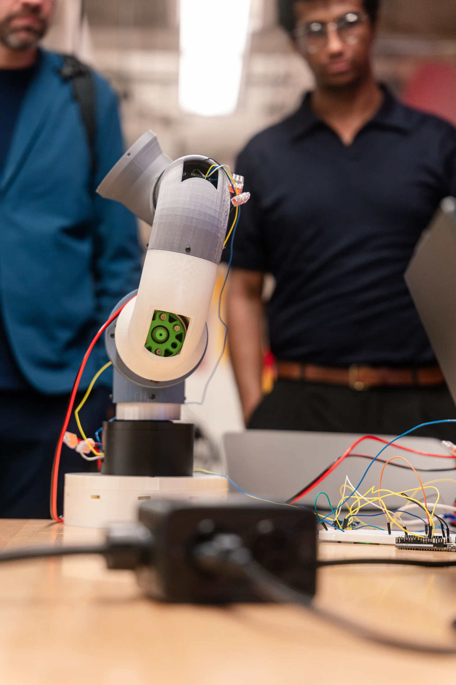

Motor Controller
Six dedicated 24 V controller PCBs are distributed across the arm's joints. Together, they command nine stepper motors, use encoder feedback for closed-loop positioning, and exchange motion and status data over CAN.
- Board countSix joint controllers
- ActuationNine stepper motors
- NetworkCAN command and status